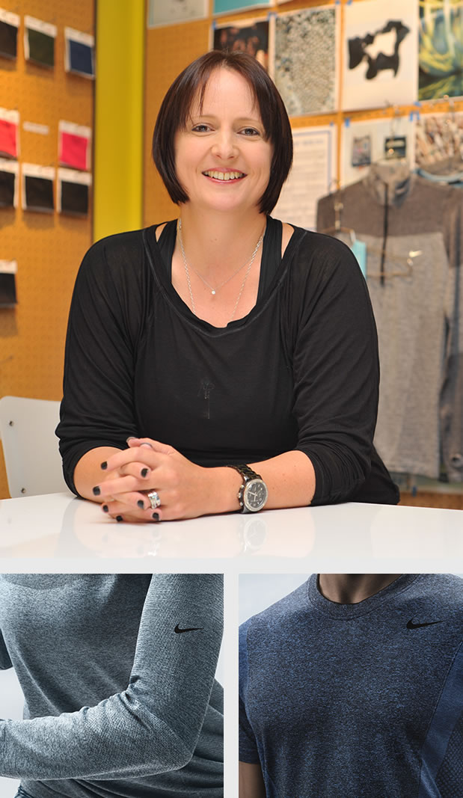
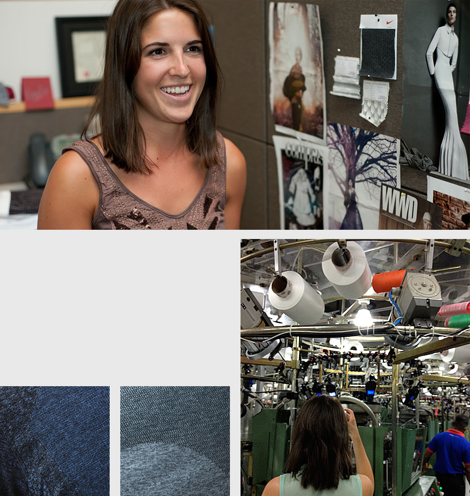
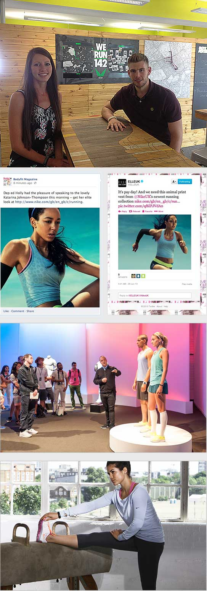

Journey
Nike Dri-FIT stands as one of the brand’s most recognizable and popular technologies. For decades, Dri-FIT has kept athletes dry and comfortable by transporting sweat away from the skin to a garment’s outer layer. Yet the much-loved technology begs the question: How can Nike bring Dri-FIT to a new level and make it even more exciting to the consumer?
In the Spring 2013 season, Nike debuted Dri-FIT Knit, one of Dri-FIT’s latest expansions into new fabrications and apparel designs to serve performance, fit and comfort needs in a variety of conditions. Dri-FIT Knit is an ultra-soft, lightweight fabric incorporating visibly different knit patterns to provide stretch and optimal cooling benefits. An open texture on the sides of garments promotes breathability in key sweat zones, and seamless construction ensures a smooth fit free of distraction.
Here we take a look at one of the latest evolutions of the beloved Nike technology through the lens of several employees who had a hand in the creation, production and promotion of Dri-FIT Knit.

Coming to Nike in 2012 from lululemon, Susi Proudman was already quite familiar with the Dri-FIT brand.
“That was so much about what Nike was,” the VP of Apparel and Equipment Materials says. “Coming into the business it was interesting learning about what Dri-FIT meant to Nike as a standard, which at the time was wicking and made of polyester.”
The U.K.-born textile expert found the Nike Apparel team had focused more on Dri-FIT’s ability to pull the moisture from the skin into the garment, and less about the moisture evaporating from the garment to keep it from saturating. Yet consumers associated Dri-FIT with “dry” – and unexpectedly, “lightweight” and “made for movement,” according to recent research the Brand team conducted with consumers.
“What we had in the market wasn’t necessarily designed to do what our consumers thought it did,” Proudman says. “At the time I didn’t understand why Dri-FIT had to be made of polyester, since there are other fibers like nylon, cotton optima and wool that can provide the benefits that our consumers expect from Dri-FIT. Now we are setting new standards for Dri-FIT products.”
Proudman and her newly-formed centralized Materials team use the lens of fibers to dimensionalize Dri-FIT, which spawned Dri-FIT Knit, Dri-FIT Touch and Dri-FIT Wool. Created in the right blend, the new mix of fibers satisfies what the consumers ask for: quick-drying, lightweight and cut for movement.
“It’s all approached through the lens of zero distraction, thermal regulation and venting,” she says. “Which we can only deliver through a seamless knit proposition.”
As the Global Category Apparel Lead for running apparel, Andrea LaMonica directs the Development and Product Management teams as Design interacts closely with both. She has guided Dri-FIT Knit’s creation journey from a business perspective, and watched as the product blossomed from a consumer insight to flying off store shelves starting in the Spring 2013 season.
The evolution of Dri-FIT stemmed from then-VP/GM of Global Running Jayme Martin pushing for product that performed as well as it looked and felt. Nike Tailwind running shirts provided a good model for polished, tailored performance apparel that went beyond the workout. More and more, consumers want to look good all the time – and that insight helped drive the creation of Dri-FIT Knit. The designers for men’s and women’s running apparel, Alex Dedman and Raegen Salchow, designed the first Dri-FIT Knit products, which struck a chord with runners.
“The initial indications of Dri-FIT Knit were incredible. Sell-through at stores was great, and consumers were very excited,” LaMonica says. “We also came across some areas where we can improve, and we’re doing that.”
LaMonica and the Running Category leadership keep an ear on the pavement to hear how the market responds. One way they listen to the consumer is through a private Facebook account shared with EKINs and Pacers interacting with wholesale store staff and consumers primarily across North America. On a daily basis the employees in the field post what they hear, good and bad, which provides Running leadership with a constant stream of areas to improve and ideas to amplify. For instance, they’re tweaking some of the colors, and studying men’s responses to the product versus women’s responses.
“Dri-FIT Knit helped propel our strategy to elevate the running apparel line and go after premium apparel. It’s proven to us that our consumers will pay more for something they perceive as top-quality,” LaMonica says. “It’s a dual-gender proposition, and we can tell a really compelling running message. Nike running apparel as a whole has become a lot more elevated, due largely to Dri-FIT Knit.”
“There’s a complex beauty that comes with knit product,” says Hillary Waddle, Seamless Developer and member of Susi Proudman’s Materials team. Waddle is one of a small group of knit specialists who Proudman pulled together nearly six months ago to drive Dri-FIT Knit and other seamless apparel projects.
“Seamless products such as Dri-FIT Knit are unique. Unlike other apparel that goes from yarn to material that’s cut and sewn together, knit products go straight from yarn to garment,” Waddle says. “For Dri-FIT Knit, machines knit the yarn into one seamless tube. If we make one small change we don’t redraw the pattern; we have to reprogram the machine.”
The circular knit machines, originally designed to produce fine-gauge intimate apparel such as bras and camisoles, debuted in the sports apparel industry several years ago. Nike ventured into the space earlier than most companies, but factory capacity at the time limited the scale of the product.
Today, factory volumes continue to rise as Nike produces a growing number of Dri-FIT Knit styles.
For each knit product, Waddle partners with designers, product managers, and Nike Category contacts to identify the right yarns to deliver the right fit, color and performance capabilities. She then works with the yarn mill to produce the right fiber for the job.
“The beauty of knit is we can engineer in where we want more compression, less compression, zones of breathability and texture changes. There’s so much we can do aesthetically and from a performance standpoint,” Waddle says. “Imagine each stitch in a knit garment as a pixel. We can engineer the garment pixel by pixel using slip stitches, skip stitches, purl stitches and others. We have an infinite number of possibilities, which is why knit is so exciting.”

Materials, Category Product Merchants, Demand & Supply Planning, Brand, Merchandising, Sales, and countless other teams touch the creation journey of each product – so who keeps everyone working together from start to finish?
Emily Wilcox, Director of Merchandising Operations, is one of those conduits for Dri-FIT Knit. She creates many of the tools and visuals to facilitate the cross-category product line planning.
“We analyze the different silhouettes,” says Wilcox, who joined Nike as a Buyer in Direct to Consumer three years ago. “We see if they are appropriately differentiated across categories, see how the pricing aligns, check for consistency with materials and color, and make sure we offer unique benefits while maintaining overarching innovation.”
She and the rest of her small team, who report to Jennifer Hartley, Senior Director of Merchandising Operations, drive cross-category initiatives such as Dri-FIT Knit and bring the right people together throughout the process to develop the innovation and maximize the line plan across Categories. They ensure Nike apparel reaches the market in a strong, cohesive, consistent fashion.
As someone who has touched most facets of a Dri-FIT Knit’s creation journey, Wilcox eagerly anticipated the launch of the Fall 2013 products.
“One of the things that I’m the most excited about is the brand team’s support behind Dri-FIT Knit in Fall 2013,” Wilcox says. “Fall 2013 is the first season where Dri-FIT Knit shows up cross-category with running, women’s training and men’s training, and Brand’s creative work with athletes Ashton Eaton and Allyson Felix is fantastic.”

How do consumers discover products such as Dri-FIT Knit? How do mentions of Dri-FIT Knit pop up in Harper’s Bazaar, Glamour, Men’s Health, and on Instagram, Facebook and Twitter? It’s with help from Global Communications and Digital teams, who stoke global and local engagement related to products like Dri-FIT Knit through storytelling, media events, product seeding and other connection points.
Jay Stephenson-Clarke, Communications Manager for Nike Running, Women’s Training and Digital Sport in the U.K., drives Dri-FIT Knit as a key apparel story in the U.K. market. Her goal: Educate key U.K. media about the product innovation to garner strong media coverage. To accomplish that, she hosted ELLE magazine, High Snobette, Garage, and Zest magazine at a Western Europe media event in Stockholm, Sweden, to give journalists a first look at the Fall 2013 Dri-FIT Knit collection and other innovations. She orchestrated media interviews with English track and field athlete, Katarina Johnson Thompson, and welcomed European journalists at the recent Running Innovation event at WHQ.
Stephenson-Clarke works closely with Greg Piddington, Digital Communities Manager for Running, Nike+ FuelBand and Women's Training in the U.K.
Piddington stages locally-relevant photo shoots with Nike athletes wearing the product, seeds super-users with product to authenticate it on Nike’s behalf, and other local social efforts that play a key role in introducing consumers to the performance features and benefits of Dri-FIT Knit and other products.
“We tie our social media efforts to Nike.com to ensure everything we do for Dri-FIT Knit delivers on key performance indicators and adds value to the business,” he says.
And the response?
“Providing media with imagery of Katarina Johnson Thompson wearing Dri-FIT Knit brought the product to life and helped secure a wide breadth of coverage across female vertical and lifestyle media titles in the U.K.,” Stephenson-Clarke says. “Media have been impressed with the look and feel of the product, and comment on how lightweight and soft the fabric is. They also liked the bright colorways of the Dri-FIT Knit Short Sleeve T-Shirt and the subtle leopard print pattern in the women’s Novelty Tank.”
“Our athletes have all been amazed by the Dri-FIT Knit and its texture, look and fit,” Piddington says. “It bridges the gap between performance and style.”
click
to go